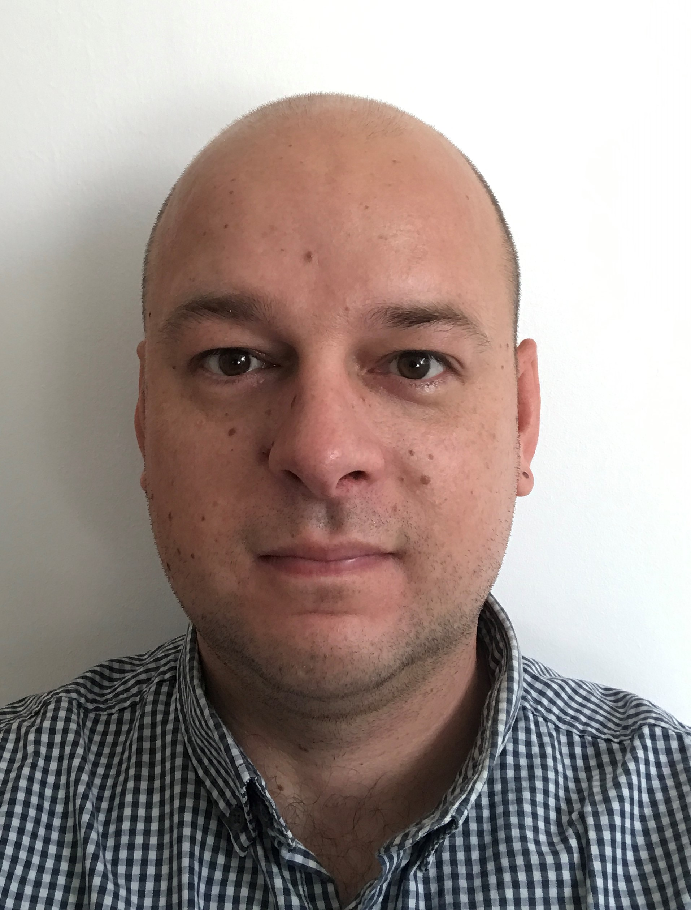

Michał Ślęzak - Homepage
Kim jestem?

Notatki z IT
Pierwsze kroki: Tester Oprogramowania.
Zaczynałem od zera, nie mając praktycznie żądnego wyobrażenia o testowaniu i programowaniu. Zapisałem się na kurs “Tester Oprogramowania” organizowanym przez Software Development Academy w Gdańsku. Wiele się nauczyłem, złapałem bakcyla i nabrałem chęci do powiększania swoich umiejętności w programowaniu i nie tylko. W styczniu 2020 zdałem egzamin ISTQB i jestem certyfikowanym Testerem Oprogramowania. Od tego momentu zacząłem jeszcze bardziej pogłębiać swoją wiedzę i bardziej poznałem świat, który kiedyś wydawał mi się dosyć niedostępny i hermetyczny. Teraz od ponad roku testuje dla uTest i TestBirds, docelowo szukam lokalnej firmy.
Kolejny krok: Frontend.
W jedynym z odcinków podcasta DevTalk gościem był Maciej Korsan, gdzie razem z Maćkiem Aniserowiczem rozmawiali o frontendzie. Temat mnie bardzo zainteresował, udało mi się zapisać na kurs WTF - Co Ten Frontend. A ta strona to odzwierciedla postępy w nauce.WTF:Co ten frontend